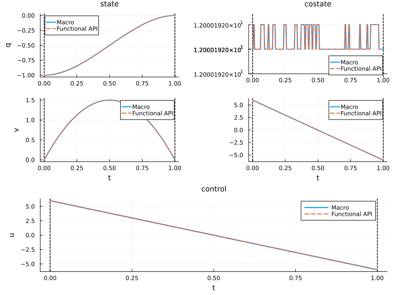
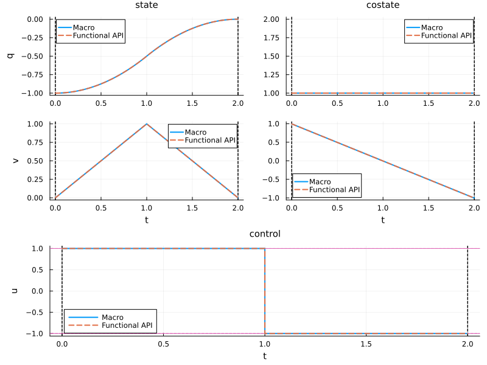
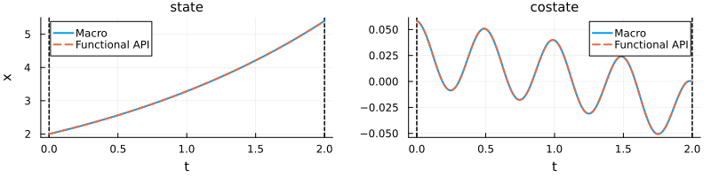
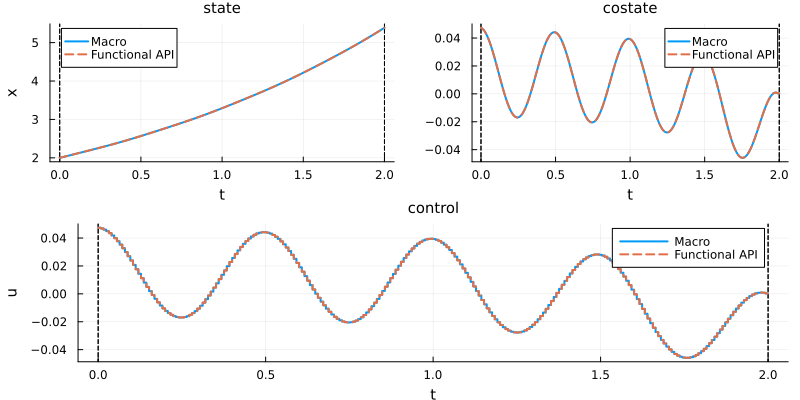
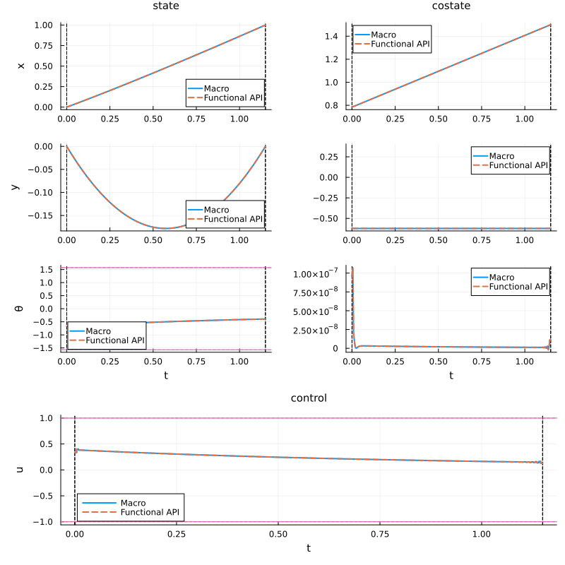
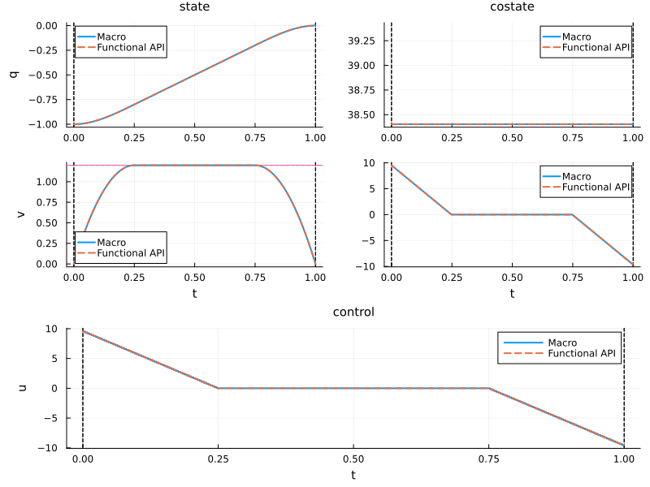

Functional API (macro-free)
The @def macro provides a concise DSL to define optimal control problems. An alternative is the functional API, which builds the same problem step by step using plain Julia functions. This approach is useful when:
- generating problems programmatically from parameters, data, or loops,
- building library code that must not rely on macros,
- interfacing with external tools that process problem structures directly.
The functional API uses OptimalControl.PreModel as a mutable builder, populated by setter calls, then frozen into an immutable OptimalControl.Model by build.
When a problem is defined with the functional API, definition(ocp) returns an EmptyDefinition — no abstract expression is stored. This contrasts with @def, which records the full DSL expression for display and introspection.
Problems built with the functional API can only be solved with the :adnlp modeler (the default). The :exa modeler (ExaModels, GPU-capable) requires the abstract syntax @def. See the solve manual for modeler details.
Content
Canvas
The functional API mirrors the Mathematical formulation. The correspondence is:
| Math | Functional API |
|---|---|
| Dynamics $f(t, x, u)$ | dyn! passed to dynamics! |
| Lagrange integrand $f^0(t, x, u)$ | lag passed to objective! |
| Mayer terminal cost $g(x_0, x_f)$ | may passed to objective! |
| Path constraint $c(t, x, u)$ | p! passed to constraint!(pre, :path; ...) |
| Boundary constraint $b(x_0, x_f)$ | b! passed to constraint!(pre, :boundary; ...) |
| Extra variable $v$ | variable! (extra argument to all the callbacks above) |
using OptimalControl
pre = OptimalControl.PreModel()
# ─── Optional: must come before time! when using indf/ind0 ───────────────────
variable!(pre, q) # q = variable dimension
# ─────────────────────────────────────────────────────────────────────────────
time!(pre; t0=..., tf=...) # fixed times
# or: time!(pre; t0=..., indf=i) # free final time at variable index i
state!(pre, n) # n = state dimension
# ─── Optional: omit entirely for control-free problems ───────────────────────
control!(pre, m) # m = control dimension
# ─────────────────────────────────────────────────────────────────────────────
# Dynamics — in-place, signature: dyn!(dx, t, x, u, v)
# dx : output vector (modified in place), length n
# t : current time (scalar)
# x : state (vector of length n; scalar state ↦ x[1])
# u : control (vector of length m; scalar control ↦ u[1]; unused if control-free)
# v : variable (vector of length q; scalar variable ↦ v[1]; unused if no variable)
function dyn!(dx, t, x, u, v)
dx[1] = ...
dx[2] = ...
end
dynamics!(pre, dyn!)
# Lagrange integrand — out-of-place, signature: lag(t, x, u, v) → scalar
lag(t, x, u, v) = ...
# Mayer terminal cost — out-of-place, signature: may(x0, xf, v) → scalar
# x0 : initial state (vector of length n; scalar state ↦ x0[1])
# xf : final state (vector of length n; scalar state ↦ xf[1])
may(x0, xf, v) = ...
objective!(pre, :min; lagrange=lag) # Lagrange cost
# or: objective!(pre, :min; mayer=may) # Mayer cost
# or: objective!(pre, :min; mayer=may, lagrange=lag) # Bolza cost
# ─── Optional: one call per constraint ───────────────────────────────────────
# Two families of constraints:
#
# (a) Box constraints on components — :state, :control, :variable
# rg selects the component range i:j, with lb ≤ x[rg] ≤ ub (resp. u, v).
constraint!(pre, :state; rg=i:j, lb=..., ub=..., label=:name)
constraint!(pre, :control; rg=i:j, lb=..., ub=..., label=:name)
constraint!(pre, :variable; rg=i:j, lb=..., ub=..., label=:name)
#
# (b) Non-linear constraints defined by a function — :boundary, :path
# The constraint reads: lb ≤ f(...) ≤ ub (use lb=ub for equality).
#
# Boundary — in-place, signature: b!(val, x0, xf, v) (same shape as Mayer)
# val : output vector (modified in place), length = length(lb) = length(ub)
# x0 : initial state (vector of length n; scalar state ↦ x0[1])
# xf : final state (vector of length n; scalar state ↦ xf[1])
# v : variable (vector of length q)
function b!(val, x0, xf, v)
val[1] = ...
end
constraint!(pre, :boundary; f=b!, lb=..., ub=..., label=:name)
#
# Path — in-place, signature: p!(val, t, x, u, v) (same shape as dynamics)
# val : output vector (modified in place), length = length(lb) = length(ub)
# t : current time (scalar)
# x : state (vector of length n)
# u : control (vector of length m)
# v : variable (vector of length q)
function p!(val, t, x, u, v)
val[1] = ...
end
constraint!(pre, :path; f=p!, lb=..., ub=..., label=:name)
# ─────────────────────────────────────────────────────────────────────────────
# autonomous=true ⟺ time t does NOT appear explicitly in the dynamics,
# the Lagrange integrand, nor in any :path constraint.
# autonomous=false ⟺ at least one of them depends explicitly on t.
time_dependence!(pre; autonomous=true)
ocp = build(pre)Required: time! · state! · dynamics! · objective! · time_dependence! · build
Optional: variable! · control! · constraint! (repeatable)
Ordering constraints:
variable!→ beforetime!when using free-time indices (indf,ind0)variable!→ beforedynamics!andobjective!dynamics!andobjective!→ aftertime!andstate!
Examples
For each problem below, the @def abstract syntax is shown on the left and the equivalent functional API on the right. After build, both formulations produce an equivalent model and can be passed directly to solve.
Double integrator: energy minimisation
The simplest case: fixed time interval, boundary constraints, autonomous dynamics, Lagrange cost. See the full example for solving and plotting.
using OptimalControl
using NLPModelsIpopt
t0 = 0.0; tf = 1.0; x0 = [-1.0, 0.0]; xf = [0.0, 0.0]Abstract syntax
ocp_macro = @def begin
t ∈ [t0, tf], time
x = (q, v) ∈ R², state
u ∈ R, control
x(t0) == x0
x(tf) == xf
ẋ(t) == [v(t), u(t)]
0.5∫( u(t)^2 ) → min
endFunctional API
pre = OptimalControl.PreModel()
time!(pre; t0=t0, tf=tf)
# state "x" with components "q" (position) and "v" (velocity)
state!(pre, 2, "x", ["q", "v"])
control!(pre, 1)
function f_energy!(dx, t, x, u, v)
dx[1] = x[2]
dx[2] = u[1]
return nothing
end
dynamics!(pre, f_energy!)
function boundary_energy!(b, x0_, xf_, v)
b[1] = x0_[1] - x0[1]
b[2] = x0_[2] - x0[2]
b[3] = xf_[1] - xf[1]
b[4] = xf_[2] - xf[2]
return nothing
end
constraint!(pre,
:boundary;
f=boundary_energy!,
lb=zeros(4), ub=zeros(4),
label=:endpoint
)
lagrange_energy(t, x, u, v) = 0.5 * u[1]^2
objective!(pre, :min; lagrange=lagrange_energy)
time_dependence!(pre; autonomous=true)
ocp_func = build(pre)Both formulations produce identical solutions. We solve both and plot them together for verification:
sol_macro = solve(ocp_macro; display=false)
sol_func = solve(ocp_func; display=false)
println("Macro: objective = ", objective(sol_macro), ", iterations = ", iterations(sol_macro))
println("Functional API: objective = ", objective(sol_func), ", iterations = ", iterations(sol_func))Macro: objective = 6.000096001536038, iterations = 1
Functional API: objective = 6.000096001536038, iterations = 1plt = plot(sol_macro; label="Macro", color=1, size=(800, 600))
plot!(plt, sol_func; label="Functional API", color=2, linestyle=:dash)
The two models are functionally equivalent. The key difference is visible via definition: the macro records the full DSL expression, whereas the functional API stores an empty definition.
definition(ocp_macro)Abstract definition:
t ∈ [t0, tf], time
x = ((q, v) ∈ R², state)
u ∈ R, control
x(t0) == x0
x(tf) == xf
ẋ(t) == [v(t), u(t)]
0.5 * ∫(u(t) ^ 2) → min
has_abstract_definition(ocp_func)falseScalar vs vector: a subtlety of the functional API
In the functional API definition above, the control is declared with control!(pre, 1) — it is of dimension 1. Yet, inside the callbacks f_energy! and lagrange_energy, we accessed it as u[1], not as u. The same applies to the state and the variable: inside callbacks, dimension-1 components must always be indexed.
This is because the functional API callbacks always receive x, u, and v as vectors, regardless of their dimension. This keeps the callback signatures uniform and lets the same code shape work for any dimension.
However, once the problem is solved, accessing the control (or state, or variable) on the solution returns a scalar when the component is of dimension 1 — just like the @def macro convention:
u_macro = control(sol_macro)
u_func = control(sol_func)
# The callbacks used u[1], yet the solution returns a scalar:
u_macro(t0), u_func(t0)(5.976095617529882, 5.976095617529882)typeof(u_macro(t0)), typeof(u_func(t0))(Float64, Float64)The functional API uses two different conventions depending on where you are:
- Inside callbacks (
dynamics!,objective!,constraint!):x,u,vare always vectors. For a dimension-1 component, usex[1],u[1],v[1]. - On a solution:
state(sol)(t),control(sol)(t),variable(sol)return a scalar when the corresponding component is of dimension 1. This matches the@defconvention (see the solution manual).
This asymmetry is intentional: callbacks are written once for any dimension, while solutions expose the mathematical object (scalar or vector) directly.
Double integrator: time minimisation
Free final time as a variable, Mayer cost, control box constraint. See the full example for solving and plotting.
using OptimalControl
using NLPModelsIpopt
t0 = 0.0; x0 = [-1.0, 0.0]; xf = [0.0, 0.0]Abstract syntax
ocp_macro = @def begin
tf ∈ R, variable
t ∈ [t0, tf], time
x = (q, v) ∈ R², state
u ∈ R, control
-1 ≤ u(t) ≤ 1
x(t0) == x0
x(tf) == xf
ẋ(t) == [v(t), u(t)]
tf → min
endFunctional API
pre = OptimalControl.PreModel()
# variable[1] = final time tf
variable!(pre, 1, "tf")
# free final time: tf = variable[1]
time!(pre; t0=t0, indf=1)
# state "x" with components "q" (position) and "v" (velocity)
state!(pre, 2, "x", ["q", "v"])
control!(pre, 1)
function f_time!(dx, t, x, u, v)
dx[1] = x[2]
dx[2] = u[1]
return nothing
end
dynamics!(pre, f_time!)
# control box constraint: -1 ≤ u ≤ 1
constraint!(pre,
:control;
rg=1:1, lb=[-1.0], ub=[1.0],
label=:u_bounds
)
function boundary_time!(b, x0_, xf_, v)
b[1] = x0_[1] - x0[1]
b[2] = x0_[2] - x0[2]
b[3] = xf_[1] - xf[1]
b[4] = xf_[2] - xf[2]
return nothing
end
constraint!(pre,
:boundary;
f=boundary_time!,
lb=zeros(4), ub=zeros(4),
label=:endpoint
)
# Mayer cost: minimise tf = variable[1]
mayer_time(x0_, xf_, v) = v[1]
objective!(pre, :min; mayer=mayer_time)
time_dependence!(pre; autonomous=true)
ocp_func = build(pre)Both formulations produce identical solutions:
sol_macro = solve(ocp_macro; display=false)
sol_func = solve(ocp_func; display=false)
println("Macro: objective = ", objective(sol_macro), ", iterations = ", iterations(sol_macro))
println("Functional API: objective = ", objective(sol_func), ", iterations = ", iterations(sol_func))Macro: objective = 1.9999999927565821, iterations = 12
Functional API: objective = 1.9999999927565821, iterations = 12plt = plot(sol_macro; label="Macro", color=1, size=(800, 600))
plot!(plt, sol_func; label="Functional API", color=2, linestyle=:dash)
variable!(pre, 1, "tf") must be called before time!(pre; indf=1) so that the free-time index refers to a declared variable.
Control-free problems
No control variable: control! is simply omitted. The dynamics and objective still receive u as an argument, but it is a zero-dimensional vector. See the full example for solving and plotting.
using OptimalControl
using NLPModelsIpopt
λ_true = 0.5
model_fn(t) = 2 * exp(λ_true * t)
noise_fn(t) = 2e-1 * sin(4π * t)
data_fn(t) = model_fn(t) + noise_fn(t)
t0 = 0.0; tf = 2.0; x0_cf = 2.0Abstract syntax
ocp_macro = @def begin
λ ∈ R, variable
t ∈ [t0, tf], time
x ∈ R, state
x(t0) == x0_cf
ẋ(t) == λ * x(t)
∫( (x(t) - data_fn(t))^2 ) → min
endFunctional API
pre = OptimalControl.PreModel()
# variable[1] = parameter λ (growth rate)
variable!(pre, 1, "λ")
time!(pre; t0=t0, tf=tf)
# scalar state x
state!(pre, 1, "x")
# no control! — control-free problem
function f_cf!(dx, t, x, u, v)
# λ = v[1]; u is empty (control-free)
dx[1] = v[1] * x[1]
return nothing
end
dynamics!(pre, f_cf!)
function boundary_cf!(b, x0_, xf_, v)
b[1] = x0_[1] - x0_cf
return nothing
end
constraint!(pre,
:boundary;
f=boundary_cf!,
lb=[0.0], ub=[0.0],
label=:ic
)
lagrange_cf(t, x, u, v) = (x[1] - data_fn(t))^2
objective!(pre, :min; lagrange=lagrange_cf)
# autonomous=false: data_fn(t) depends on t
time_dependence!(pre; autonomous=false)
ocp_func = build(pre)Both formulations produce identical solutions:
sol_macro = solve(ocp_macro; display=false)
sol_func = solve(ocp_func; display=false)
println("Macro: objective = ", objective(sol_macro), ", iterations = ", iterations(sol_macro))
println("Functional API: objective = ", objective(sol_func), ", iterations = ", iterations(sol_func))Macro: objective = 0.039418264514532446, iterations = 13
Functional API: objective = 0.039418264514532446, iterations = 13plt = plot(sol_macro; label="Macro", color=1, size=(800, 200))
plot!(plt, sol_func; label="Functional API", color=2, linestyle=:dash)
time_dependence!(pre; autonomous=false) is required here because the Lagrange integrand data_fn(t) depends explicitly on time t.
Problems mixing control and variable
A variable parameter and an explicit control are used simultaneously. See the full example for solving and plotting.
using OptimalControl
using NLPModelsIpopt
λ_true = 0.5
model_fn2(t) = 2 * exp(λ_true * t)
noise_fn2(t) = 2e-1 * sin(4π * t)
data_fn2(t) = model_fn2(t) + noise_fn2(t)
t0 = 0.0; tf = 2.0; x0_cv = 2.0Abstract syntax
ocp_macro = @def begin
λ ∈ R, variable
t ∈ [t0, tf], time
x ∈ R, state
u ∈ R, control
x(t0) == x0_cv
ẋ(t) == λ * x(t) + u(t)
∫( (x(t) - data_fn2(t))^2 + 0.5*u(t)^2 ) → min
endFunctional API
pre = OptimalControl.PreModel()
# variable[1] = parameter λ (growth rate)
variable!(pre, 1, "λ")
time!(pre; t0=t0, tf=tf)
# scalar state x
state!(pre, 1, "x")
# scalar control u
control!(pre, 1)
function f_cv!(dx, t, x, u, v)
# λ = v[1]
dx[1] = v[1] * x[1] + u[1]
return nothing
end
dynamics!(pre, f_cv!)
function boundary_cv!(b, x0_, xf_, v)
b[1] = x0_[1] - x0_cv
return nothing
end
constraint!(pre,
:boundary;
f=boundary_cv!,
lb=[0.0], ub=[0.0],
label=:ic
)
lagrange_cv(t, x, u, v) =
(x[1] - data_fn2(t))^2 + 0.5 * u[1]^2
objective!(pre, :min; lagrange=lagrange_cv)
# autonomous=false: data_fn2(t) depends on t
time_dependence!(pre; autonomous=false)
ocp_func = build(pre)Both formulations produce identical solutions:
sol_macro = solve(ocp_macro; display=false)
sol_func = solve(ocp_func; display=false)
println("Macro: objective = ", objective(sol_macro), ", iterations = ", iterations(sol_macro))
println("Functional API: objective = ", objective(sol_func), ", iterations = ", iterations(sol_func))Macro: objective = 0.0387233419140724, iterations = 11
Functional API: objective = 0.0387233419140724, iterations = 11plt = plot(sol_macro; label="Macro", color=1, size=(800, 400))
plot!(plt, sol_func; label="Functional API", color=2, linestyle=:dash)
Singular control
Three-dimensional state, free final time, state and control box constraints, Mayer cost. See the full example for solving and plotting.
using OptimalControl
using NLPModelsIpoptAbstract syntax
ocp_macro = @def begin
tf ∈ R, variable
t ∈ [0, tf], time
q = (x, y, θ) ∈ R³, state
u ∈ R, control
-1 ≤ u(t) ≤ 1
-π/2 ≤ θ(t) ≤ π/2
x(0) == 0
y(0) == 0
x(tf) == 1
y(tf) == 0
∂(q)(t) == [cos(θ(t)), sin(θ(t)) + x(t), u(t)]
tf → min
endFunctional API
pre = OptimalControl.PreModel()
# variable[1] = final time tf
variable!(pre, 1, "tf")
# free final time: tf = variable[1]
time!(pre; t0=0.0, indf=1)
# state "q" with components "x", "y", "θ"
state!(pre, 3, "q", ["x", "y", "θ"])
control!(pre, 1)
function f_singular!(dq, t, q, u, v)
dq[1] = cos(q[3])
dq[2] = sin(q[3]) + q[1]
dq[3] = u[1]
return nothing
end
dynamics!(pre, f_singular!)
# control box constraint: -1 ≤ u ≤ 1
constraint!(pre,
:control;
rg=1:1, lb=[-1.0], ub=[1.0],
label=:u_bounds
)
# state box constraint on θ = q[3]: -π/2 ≤ θ ≤ π/2
constraint!(pre,
:state;
rg=3:3, lb=[-π/2], ub=[π/2],
label=:theta_bounds
)
function boundary_singular!(b, q0, qf, v)
b[1] = q0[1] # x(0) = 0
b[2] = q0[2] # y(0) = 0
b[3] = qf[1] - 1.0 # x(tf) = 1
b[4] = qf[2] # y(tf) = 0
return nothing
end
constraint!(pre,
:boundary;
f=boundary_singular!,
lb=zeros(4), ub=zeros(4),
label=:endpoint
)
# Mayer cost: minimise tf = variable[1]
mayer_singular(q0, qf, v) = v[1]
objective!(pre, :min; mayer=mayer_singular)
time_dependence!(pre; autonomous=true)
ocp_func = build(pre)Both formulations produce identical solutions:
sol_macro = solve(ocp_macro; display=false)
sol_func = solve(ocp_func; display=false)
println("Macro: objective = ", objective(sol_macro), ", iterations = ", iterations(sol_macro))
println("Functional API: objective = ", objective(sol_func), ", iterations = ", iterations(sol_func))Macro: objective = 1.1497309627876084, iterations = 12
Functional API: objective = 1.1497309627876084, iterations = 12plt = plot(sol_macro; label="Macro", color=1, size=(800, 800))
plot!(plt, sol_func; label="Functional API", color=2, linestyle=:dash)
State constraint
Same double integrator as the energy minimisation example, with an added upper bound on velocity. See the full example for solving and plotting.
using OptimalControl
using NLPModelsIpopt
t0 = 0.0; tf = 1.0; x0 = [-1.0, 0.0]; xf = [0.0, 0.0]Abstract syntax
ocp_macro = @def begin
t ∈ [t0, tf], time
x = (q, v) ∈ R², state
u ∈ R, control
x(t0) == x0
x(tf) == xf
v(t) ≤ 1.2
ẋ(t) == [v(t), u(t)]
0.5∫( u(t)^2 ) → min
endFunctional API
pre = OptimalControl.PreModel()
time!(pre; t0=t0, tf=tf)
# state "x" with components "q" (position) and "v" (velocity)
state!(pre, 2, "x", ["q", "v"])
control!(pre, 1)
function f_state!(dx, t, x, u, v)
dx[1] = x[2]
dx[2] = u[1]
return nothing
end
dynamics!(pre, f_state!)
function boundary_state!(b, x0_, xf_, v)
b[1] = x0_[1] - x0[1]
b[2] = x0_[2] - x0[2]
b[3] = xf_[1] - xf[1]
b[4] = xf_[2] - xf[2]
return nothing
end
constraint!(pre,
:boundary;
f=boundary_state!,
lb=zeros(4), ub=zeros(4),
label=:endpoint
)
# state box constraint: v(t) ≤ 1.2, i.e. x[2] ≤ 1.2
constraint!(pre,
:state;
rg=2:2, lb=[-Inf], ub=[1.2],
label=:v_max
)
lagrange_state(t, x, u, v) = 0.5 * u[1]^2
objective!(pre, :min; lagrange=lagrange_state)
time_dependence!(pre; autonomous=true)
ocp_func = build(pre)Both formulations produce identical solutions:
sol_macro = solve(ocp_macro; display=false)
sol_func = solve(ocp_func; display=false)
println("Macro: objective = ", objective(sol_macro), ", iterations = ", iterations(sol_macro))
println("Functional API: objective = ", objective(sol_func), ", iterations = ", iterations(sol_func))Macro: objective = 7.68049132932235, iterations = 13
Functional API: objective = 7.68049132932235, iterations = 13plt = plot(sol_macro; label="Macro", color=1, size=(800, 600))
plot!(plt, sol_func; label="Functional API", color=2, linestyle=:dash)
The state box constraint v(t) ≤ 1.2 is expressed as constraint!(pre, :state; rg=2:2, lb=[-Inf], ub=[1.2], ...), where rg=2:2 selects the second state component v.
API Reference
CTModels.OCP.PreModel — Type
mutable struct PreModel <: CTModels.OCP.AbstractModelMutable optimal control problem model under construction.
A PreModel is used to incrementally define an optimal control problem before building it into an immutable Model. Fields can be set in any order and the model is validated before building.
Fields
times::Union{AbstractTimesModel,Nothing}: Initial and final time specification.state::Union{AbstractStateModel,Nothing}: State variable structure.control::AbstractControlModel: Control variable structure (defaults toEmptyControlModel(), i.e. no control).variable::AbstractVariableModel: Optimisation variable (defaults to empty).dynamics::Union{Function,Vector,Nothing}: System dynamics (function or component-wise).objective::Union{AbstractObjectiveModel,Nothing}: Cost functional.constraints::ConstraintsDictType: Dictionary of constraints being built.definition::AbstractDefinition: Symbolic definition; defaults toEmptyDefinitionand becomes aDefinitionwhendefinition!is called with a real expression.autonomous::Union{Bool,Nothing}: Whether the system is autonomous.
Example
julia> using CTModels
julia> pre = CTModels.PreModel()
julia> # Set fields incrementally...CTModels.OCP.time! — Function
time!(
ocp::CTModels.OCP.PreModel;
t0,
tf,
ind0,
indf,
time_name
)
Set the initial and final times. We denote by t0 the initial time and tf the final time. The optimal control problem is denoted ocp. When a time is free, then, one must provide the corresponding index of the ocp variable.
Examples
julia> time!(ocp, t0=0, tf=1 ) # Fixed t0 and fixed tf
julia> time!(ocp, t0=0, indf=2) # Fixed t0 and free tf
julia> time!(ocp, ind0=2, tf=1 ) # Free t0 and fixed tf
julia> time!(ocp, ind0=2, indf=3) # Free t0 and free tfWhen you plot a solution of an optimal control problem, the name of the time variable appears. By default, the name is "t". Consider you want to set the name of the time variable to "s".
julia> time!(ocp, t0=0, tf=1, time_name="s") # time_name is a String
# or
julia> time!(ocp, t0=0, tf=1, time_name=:s ) # time_name is a Symbol Throws
Exceptions.PreconditionError: If time has already been setExceptions.PreconditionError: If variable must be set before (when t0 or tf is free)Exceptions.IncorrectArgument: If ind0 or indf is out of boundsExceptions.IncorrectArgument: If both t0 and ind0 are providedExceptions.IncorrectArgument: If neither t0 nor ind0 is providedExceptions.IncorrectArgument: If both tf and indf are providedExceptions.IncorrectArgument: If neither tf nor indf is providedExceptions.IncorrectArgument: If time_name is emptyExceptions.IncorrectArgument: If time_name conflicts with existing namesExceptions.IncorrectArgument: If t0 ≥ tf (when both are fixed)
CTModels.OCP.state! — Function
state!(ocp::CTModels.OCP.PreModel, n::Int64)
state!(
ocp::CTModels.OCP.PreModel,
n::Int64,
name::Union{String, Symbol}
)
state!(
ocp::CTModels.OCP.PreModel,
n::Int64,
name::Union{String, Symbol},
components_names::Array{T2<:Union{String, Symbol}, 1}
)
Define the state dimension and possibly the names of each component.
Examples
julia> state!(ocp, 1)
julia> state_dimension(ocp)
1
julia> state_components(ocp)
["x"]
julia> state!(ocp, 1, "y")
julia> state_dimension(ocp)
1
julia> state_components(ocp)
["y"]
julia> state!(ocp, 2)
julia> state_dimension(ocp)
2
julia> state_components(ocp)
["x₁", "x₂"]
julia> state!(ocp, 2, :y)
julia> state_dimension(ocp)
2
julia> state_components(ocp)
["y₁", "y₂"]
julia> state!(ocp, 2, "y")
julia> state_dimension(ocp)
2
julia> state_components(ocp)
["y₁", "y₂"]
julia> state!(ocp, 2, "y", ["u", "v"])
julia> state_dimension(ocp)
2
julia> state_components(ocp)
["u", "v"]
julia> state!(ocp, 2, "y", [:u, :v])
julia> state_dimension(ocp)
2
julia> state_components(ocp)
["u", "v"]Throws
Exceptions.PreconditionError: If state has already been setExceptions.IncorrectArgument: If n ≤ 0Exceptions.IncorrectArgument: If number of component names ≠ nExceptions.IncorrectArgument: If name is emptyExceptions.IncorrectArgument: If any component name is emptyExceptions.IncorrectArgument: If name is one of the component namesExceptions.IncorrectArgument: If component names contain duplicatesExceptions.IncorrectArgument: If name conflicts with existing names in other componentsExceptions.IncorrectArgument: If any component name conflicts with existing names
CTModels.OCP.control! — Function
control!(ocp::CTModels.OCP.PreModel, m::Int64)
control!(
ocp::CTModels.OCP.PreModel,
m::Int64,
name::Union{String, Symbol}
)
control!(
ocp::CTModels.OCP.PreModel,
m::Int64,
name::Union{String, Symbol},
components_names::Array{T2<:Union{String, Symbol}, 1}
)
Define the control input for a given optimal control problem model.
This function sets the control dimension and optionally allows specifying the control name and the names of its components.
Arguments
ocp::PreModel: The model to which the control will be added.m::Dimension: The control input dimension (must be greater than 0).name::Union{String,Symbol}(optional): The name of the control variable (default:"u").components_names::Vector{<:Union{String,Symbol}}(optional): Names of the control components (default: automatically generated).
Examples
julia> control!(ocp, 1)
julia> control_dimension(ocp)
1
julia> control_components(ocp)
["u"]
julia> control!(ocp, 1, "v")
julia> control_components(ocp)
["v"]
julia> control!(ocp, 2)
julia> control_components(ocp)
["u₁", "u₂"]
julia> control!(ocp, 2, :v)
julia> control_components(ocp)
["v₁", "v₂"]
julia> control!(ocp, 2, "v", ["a", "b"])
julia> control_components(ocp)
["a", "b"]Throws
Exceptions.PreconditionError: If control has already been setExceptions.IncorrectArgument: If m ≤ 0Exceptions.IncorrectArgument: If number of component names ≠ mExceptions.IncorrectArgument: If name is emptyExceptions.IncorrectArgument: If any component name is emptyExceptions.IncorrectArgument: If name is one of the component namesExceptions.IncorrectArgument: If component names contain duplicatesExceptions.IncorrectArgument: If name conflicts with existing names in other componentsExceptions.IncorrectArgument: If any component name conflicts with existing names
CTModels.OCP.variable! — Function
variable!(ocp::CTModels.OCP.PreModel, q::Int64)
variable!(
ocp::CTModels.OCP.PreModel,
q::Int64,
name::Union{String, Symbol}
)
variable!(
ocp::CTModels.OCP.PreModel,
q::Int64,
name::Union{String, Symbol},
components_names::Array{T2<:Union{String, Symbol}, 1}
)
Define a new variable in the optimal control problem ocp with dimension q.
This function registers a named variable (e.g. "state", "control", or other) to be used in the problem definition. You may optionally specify a name and individual component names.
Arguments
ocp: ThePreModelwhere the variable is registered.q: The dimension of the variable (number of components).name: A name for the variable (default: auto-generated fromq).components_names: A vector of strings or symbols for each component (default:["v₁", "v₂", ...]).
Examples
julia> variable!(ocp, 1, "v")
julia> variable!(ocp, 2, "v", ["v₁", "v₂"])Throws
Exceptions.PreconditionError: If variable has already been setExceptions.PreconditionError: If objective has already been setExceptions.PreconditionError: If dynamics has already been setExceptions.IncorrectArgument: If number of component names ≠ q (when q > 0)Exceptions.IncorrectArgument: If name is empty (when q > 0)Exceptions.IncorrectArgument: If any component name is empty (when q > 0)Exceptions.IncorrectArgument: If name is one of the component names (when q > 0)Exceptions.IncorrectArgument: If component names contain duplicates (when q > 0)Exceptions.IncorrectArgument: If name conflicts with existing names in other components (when q > 0)Exceptions.IncorrectArgument: If any component name conflicts with existing names (when q > 0)
CTModels.OCP.dynamics! — Function
dynamics!(ocp::CTModels.OCP.PreModel, f::Function)
Set the full dynamics of the optimal control problem ocp using the function f.
Arguments
ocp::PreModel: The optimal control problem being defined.f::Function: A function that defines the complete system dynamics.
Preconditions
- The state and times must be set before calling this function.
- Control is optional: problems without control input (dimension 0) are supported.
- No dynamics must have been set previously.
Behavior
This function assigns f as the complete dynamics of the system. It throws an error if the state or times are not yet set, or if dynamics have already been set.
Errors
Throws Exceptions.PreconditionError if called out of order or in an invalid state.
dynamics!(
ocp::CTModels.OCP.PreModel,
rg::AbstractRange{<:Int64},
f::Function
)
Add a partial dynamics function f to the optimal control problem ocp, applying to the subset of state indices specified by the range rg.
Arguments
ocp::PreModel: The optimal control problem being defined.rg::AbstractRange{<:Int}: Range of state indices to whichfapplies.f::Function: A function describing the dynamics over the specified state indices.
Preconditions
- The state and times must be set before calling this function.
- Control is optional: problems without control input (dimension 0) are supported.
- The full dynamics must not yet be complete.
- No overlap is allowed between
rgand existing dynamics index ranges.
Behavior
This function appends the tuple (rg, f) to the list of partial dynamics. It ensures that the specified indices are not already covered and that the system is in a valid configuration for adding partial dynamics.
Errors
Throws Exceptions.PreconditionError if:
- The state or times are not yet set.
- The dynamics are already defined completely.
- Any index in
rgoverlaps with an existing dynamics range.
Example
julia> dynamics!(ocp, 1:2, (out, t, x, u, v) -> out .= x[1:2] .+ u[1:2])
julia> dynamics!(ocp, 3:3, (out, t, x, u, v) -> out .= x[3] * v[1])dynamics!(
ocp::CTModels.OCP.PreModel,
i::Integer,
f::Function
)
Define partial dynamics for a single state variable index in an optimal control problem.
This is a convenience method for defining dynamics affecting only one element of the state vector. It wraps the scalar index i into a range i:i and delegates to the general partial dynamics method.
Arguments
ocp::PreModel: The optimal control problem being defined.i::Integer: The index of the state variable to which the functionfapplies.f::Function: A function of the form(out, t, x, u, v) -> ..., which updates the scalar outputout[1]in-place.
Behavior
This is equivalent to calling:
julia> dynamics!(ocp, i:i, f)Errors
Throws the same errors as the range-based method if:
- The model is not properly initialized.
- The index
ioverlaps with existing dynamics. - A full dynamics function is already defined.
Example
julia> dynamics!(ocp, 3, (out, t, x, u, v) -> out[1] = x[3]^2 + u[1])CTModels.OCP.objective! — Function
objective!(ocp::CTModels.OCP.PreModel; ...)
objective!(
ocp::CTModels.OCP.PreModel,
criterion::Symbol;
mayer,
lagrange
)
Set the objective of the optimal control problem.
Arguments
ocp::PreModel: the optimal control problem.criterion::Symbol: the type of criterion. Either :min, :max, :MIN, or :MAX (case-insensitive). Default is :min.mayer::Union{Function, Nothing}: the Mayer function (inplace). Default is nothing.lagrange::Union{Function, Nothing}: the Lagrange function (inplace). Default is nothing.
- The state and times must be set before the objective.
- Control is optional: problems without control input (dimension 0) are fully supported.
- The objective must not be set before.
- At least one of the two functions must be given. Please provide a Mayer or a Lagrange function.
Examples
julia> function mayer(x0, xf, v)
return x0[1] + xf[1] + v[1]
end
julia> function lagrange(t, x, u, v)
return x[1] + u[1] + v[1]
end
julia> objective!(ocp, :min, mayer=mayer, lagrange=lagrange)Throws
Exceptions.PreconditionError: If state has not been setExceptions.PreconditionError: If times has not been setExceptions.PreconditionError: If objective has already been setExceptions.IncorrectArgument: If criterion is not :min, :max, :MIN, or :MAXExceptions.IncorrectArgument: If neither mayer nor lagrange function is provided
CTModels.OCP.constraint! — Function
constraint!(
ocp::CTModels.OCP.PreModel,
type::Symbol;
rg,
f,
lb,
ub,
label,
codim_f
)
Add a constraint to a pre-model. See __constraint! for more details.
Arguments
ocp: The pre-model to which the constraint will be added.type: The type of the constraint. It can be:state,:control,:variable,:boundary, or:path.rg: The range of the constraint. It can be an integer or a range of integers.f: The function that defines the constraint. It must return a vector of the same dimension as the constraint.lb: The lower bound of the constraint. It can be a number or a vector.ub: The upper bound of the constraint. It can be a number or a vector.label: The label of the constraint. It must be unique in the pre-model.
Example
# Example of adding a control constraint to a pre-model
julia> ocp = PreModel()
julia> constraint!(ocp, :control, rg=1:2, lb=[0.0], ub=[1.0], label=:control_constraint)Throws
Exceptions.PreconditionError: If state has not been setExceptions.PreconditionError: If times has not been setExceptions.PreconditionError: If control has not been set andtype == :controlExceptions.PreconditionError: If variable has not been set (when type=:variable)Exceptions.PreconditionError: If constraint with same label already existsExceptions.PreconditionError: If both lb and ub are nothingExceptions.IncorrectArgument: If lb and ub have different lengthsExceptions.IncorrectArgument: If lb > ub element-wiseExceptions.IncorrectArgument: If dimensions don't match expected sizes
CTModels.OCP.time_dependence! — Function
time_dependence!(ocp::CTModels.OCP.PreModel; autonomous)
Set the time dependence of the optimal control problem ocp.
Arguments
ocp::PreModel: The optimal control problem being defined.autonomous::Bool: Indicates whether the system is autonomous (true) or time-dependent (false).
Preconditions
- The time dependence must not have been set previously.
Behavior
This function sets the autonomous field of the model to indicate whether the system's dynamics explicitly depend on time. It can only be called once.
Errors
Throws Exceptions.PreconditionError if the time dependence has already been set.
Example
julia> ocp = PreModel(...)
julia> time_dependence!(ocp; autonomous=true)CTModels.OCP.build — Function
build(
constraints::OrderedCollections.OrderedDict{Symbol, Tuple{Symbol, Union{Function, OrdinalRange{<:Int64}}, AbstractVector{<:Real}, AbstractVector{<:Real}}}
) -> CTModels.OCP.ConstraintsModel{TP, TB, Tuple{Vector{Float64}, Vector{Int64}, Vector{Float64}, Vector{Symbol}, Vector{Vector{Symbol}}}, Tuple{Vector{Float64}, Vector{Int64}, Vector{Float64}, Vector{Symbol}, Vector{Vector{Symbol}}}, Tuple{Vector{Float64}, Vector{Int64}, Vector{Float64}, Vector{Symbol}, Vector{Vector{Symbol}}}} where {TP<:Tuple{Vector{Float64}, Any, Vector{Float64}, Vector{Symbol}}, TB<:Tuple{Vector{Float64}, Any, Vector{Float64}, Vector{Symbol}}}
Constructs a ConstraintsModel from a dictionary of constraints.
This function processes a dictionary where each entry defines a constraint with its type, function or index range, lower and upper bounds, and label. It categorizes constraints into path, boundary, state, control, and variable constraints, assembling them into a structured ConstraintsModel.
Arguments
constraints::ConstraintsDictType: A dictionary mapping constraint labels to tuples of the form(type, function_or_range, lower_bound, upper_bound).
Returns
ConstraintsModel: A structured model encapsulating all provided constraints.
Example
julia> constraints = OrderedDict(
:c1 => (:path, f1, [0.0], [1.0]),
:c2 => (:state, 1:2, [-1.0, -1.0], [1.0, 1.0])
)
julia> model = build(constraints)build(
pre_ocp::CTModels.OCP.PreModel;
build_examodel
) -> CTModels.OCP.Model{TD, var"#s179", var"#s1791", var"#s1792", var"#s1793", var"#s1794", var"#s1795", CTModels.OCP.ConstraintsModel{TP, TB, Tuple{Vector{Float64}, Vector{Int64}, Vector{Float64}, Vector{Symbol}, Vector{Vector{Symbol}}}, Tuple{Vector{Float64}, Vector{Int64}, Vector{Float64}, Vector{Symbol}, Vector{Vector{Symbol}}}, Tuple{Vector{Float64}, Vector{Int64}, Vector{Float64}, Vector{Symbol}, Vector{Vector{Symbol}}}}, <:CTModels.OCP.AbstractDefinition, Nothing} where {TD<:CTModels.OCP.TimeDependence, var"#s179"<:CTModels.OCP.AbstractTimesModel, var"#s1791"<:CTModels.OCP.AbstractStateModel, var"#s1792"<:CTModels.OCP.AbstractControlModel, var"#s1793"<:CTModels.OCP.AbstractVariableModel, var"#s1794"<:Function, var"#s1795"<:CTModels.OCP.AbstractObjectiveModel, TP<:Tuple{Vector{Float64}, Any, Vector{Float64}, Vector{Symbol}}, TB<:Tuple{Vector{Float64}, Any, Vector{Float64}, Vector{Symbol}}}
Converts a mutable PreModel into an immutable Model.
This function finalizes a pre-defined optimal control problem (PreModel) by verifying that all necessary components (times, state, dynamics, objective) are set. It then constructs a Model instance, incorporating optional components like control, variable, and constraints.
Control is optional: calling control! is not required. When omitted, the model is built with control_dimension == 0 (an EmptyControlModel). This is useful for problems where the dynamics depend only on the state, such as pure state-space systems.
Arguments
pre_ocp::PreModel: The pre-defined optimal control problem to be finalized.
Returns
Model: A fully constructed model ready for solving.
Example without control
julia> pre_ocp = PreModel()
julia> times!(pre_ocp, 0.0, 1.0, 100)
julia> state!(pre_ocp, 2, "x", ["x1", "x2"])
julia> dynamics!(pre_ocp, (t, x, u) -> [-x[2], x[1]])
julia> objective!(pre_ocp, :min, mayer=(x0, xf) -> xf[1]^2)
julia> model = build(pre_ocp)
julia> control_dimension(model) # 0Example with control
julia> pre_ocp = PreModel()
julia> times!(pre_ocp, 0.0, 1.0, 100)
julia> state!(pre_ocp, 2, "x", ["x1", "x2"])
julia> control!(pre_ocp, 1, "u", ["u1"])
julia> dynamics!(pre_ocp, (dx, t, x, u, v) -> dx .= x + u)
julia> model = build(pre_ocp)CTModels.OCP.Model — Type
struct Model{TD<:CTModels.OCP.TimeDependence, TimesModelType<:CTModels.OCP.AbstractTimesModel, StateModelType<:CTModels.OCP.AbstractStateModel, ControlModelType<:CTModels.OCP.AbstractControlModel, VariableModelType<:CTModels.OCP.AbstractVariableModel, DynamicsModelType<:Function, ObjectiveModelType<:CTModels.OCP.AbstractObjectiveModel, ConstraintsModelType<:CTModels.OCP.AbstractConstraintsModel, DefinitionType<:CTModels.OCP.AbstractDefinition, BuildExaModelType<:Union{Nothing, Function}} <: CTModels.OCP.AbstractModelImmutable optimal control problem model containing all problem components.
A Model is created from a PreModel once all required fields have been set. It is parameterised by the time dependence type (Autonomous or NonAutonomous) and the types of all its components.
Fields
times::TimesModelType: Initial and final time specification.state::StateModelType: State variable structure (name, components).control::ControlModelType: Control variable structure (name, components).variable::VariableModelType: Optimisation variable structure (may be empty).dynamics::DynamicsModelType: System dynamics function(t, x, u, v) -> ẋ.objective::ObjectiveModelType: Cost functional (Mayer, Lagrange, or Bolza).constraints::ConstraintsModelType: All problem constraints. Box constraints satisfy the per-component uniqueness invariant: each component appears at most once in the stored tuples, bounds are the intersection of all declared bounds, and every declared label is preserved in thealiasesfield of the box tuples (seeConstraintsModel).definition::DefinitionType: Original symbolic definition of the problem, stored as a subtype ofAbstractDefinition(Definitionwhen set,EmptyDefinitionotherwise).build_examodel::BuildExaModelType: Optional ExaModels builder function.
Example
julia> using CTModels
julia> # Models are typically created via the @def macro or PreModel
julia> ocp = CTModels.Model # Type reference